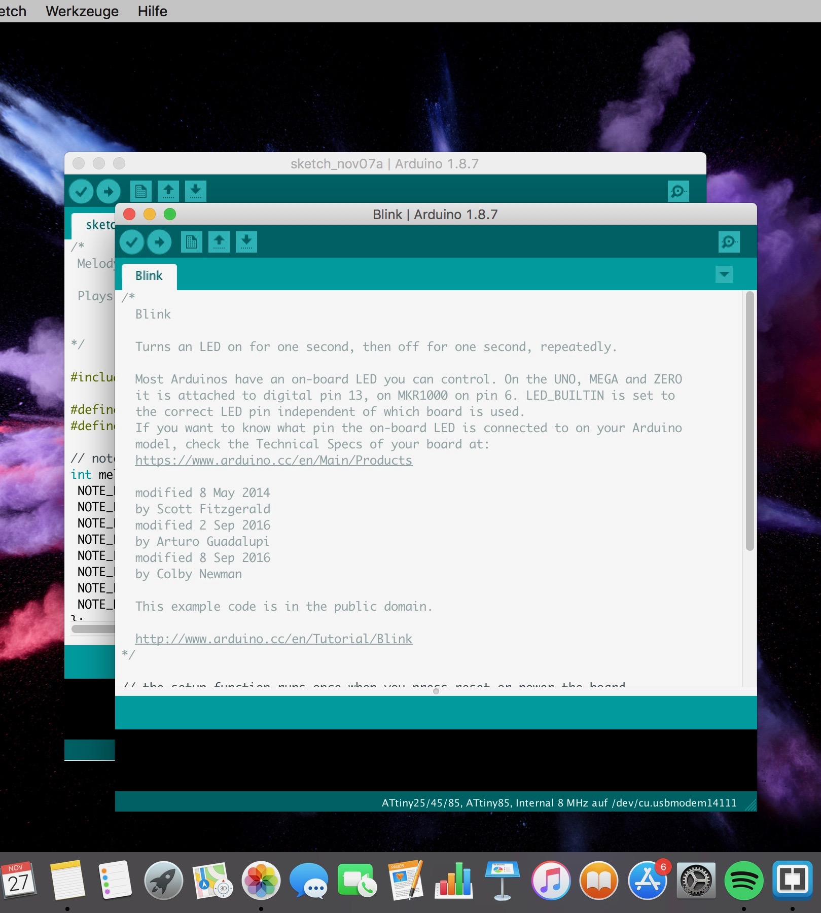

Week 3
Programming
Working with Arduino
Arduino is an open-source electronics platform based on easy-to-use hardware and software. Arduino boards are able to read inputs - light on a sensor, a finger on a button, or a Twitter message - and turn it into an output - activating a motor, turning on an LED, publishing something online. You can tell your board what to do by sending a set of instructions to the microcontroller on the board. -> If you want to find out more about Arduino, click here.
How To
Step 1
If you want to work with Arduino, you first have to install the Arduino Software. A link to the download website you can finde here.
Step 2
Arduino hast a few prefabricated codes, which you can use and work with. You can decide between different topics there. To find it, you have to go to to File -> Examples.
Step 3
A new windows will open and show you the chosen prefabricated code. Now you have to change the LED-Buitin to the number of pin you are going to use. In this case we are using pin 13.

Step 4
In the next step you have to place the LED into DNG (the minus pole) and in pin 13 (the plus pole).
step 5
After that you have to verify your code by pressing the hook.
Step 6
Now you have to connect your Arduino with your computer through an USB cable. You will check all the settings of your Arduino. In our case I worked with the Arduino Genuine Uno. So you have to select that one. For port you have to select the port, where your USB is connected.
´">
Step 7
Now your chosen prefabricated code can be uploaded. As result, the LED should be blinking.